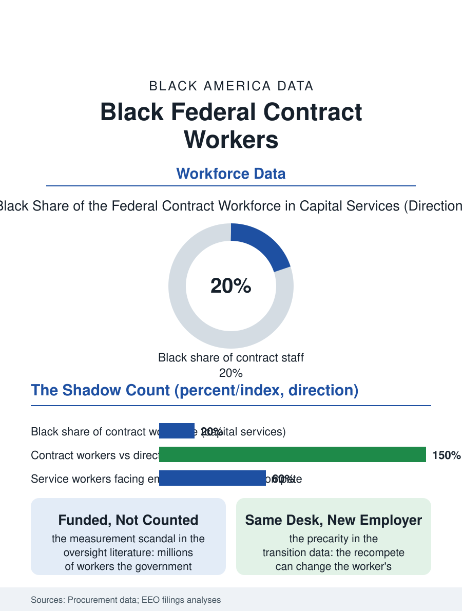

Black Employment
The Other Badge: Black Federal Contract Workers
Four million workers the government pays for and does not count, their badge a different color, their seniority reset at every recompete. The contractors file.

The federal government's work is done substantially by private hands: some four million contract workers cook, guard, clean, code, and administer across the agencies under firms whose payrolls the government funds and whose workforces the official statistics do not count as its own. Black workers hold a share of that shadow workforce above their population share, concentrated, as in the direct federal file, in the services the capital region anchors. This article reads the federal contractors file.
The Shadow Federal Workforce
The contract workforce's scale is the file's first fact and its measurement scandal: the government's own accounting cannot state the workforce's size with precision, the estimates built from the procurement dollars and the contractors' reports, a workforce of millions administered without the personnel system's census that the direct file enjoys, so that its demographics are known through the surveys and the large contractors' EEO filings rather than through any official count, a data gap that is itself a policy position the oversight literature names. What the filings show is the pattern the capital's economy predicts: the administrative, facilities, and security contracts of the Washington region employ a Black professional and service workforce of great depth, the contract analyst and the program manager beside the guard and the custodian of the cleaning file's federal tier, the latter carrying the contract's distinctive precarity, the recompete cycle that can change the worker's employer, and reset the seniority and the benefits, without changing the desk, a churn the Service Contract Act's wage determinations only partly cushion. The inspection and oversight workforce deserves the file's specific note: the auditors and investigators who police the contract system itself are substantially contract-adjacent professionals in the modern arrangement, so that the shadow workforce audits its own shadow in places, a recursion the oversight literature flags and the workforce performing it describes without surprise.
Recompetes and the Wage Floor
The service contract's labor standards are the file's policy substance: the wage determination system sets the locality's prevailing rates as the contract's floor, the recent executive actions raising the contract minimum above the statutory one in the cycles when they stand, and the fringe and seniority protections of the incumbent workforce being the standing subject of the transition rules' drafting, each administration's version audited by the workforce that lives under it. The professional tier's file is the cleared workforce's: the security clearance as the capital region's true professional license, its adjudication standards and its timeline composing a gate whose demographic distribution the clearance data, published in aggregate, show narrowing at the investigation's financial and history criteria in the pattern of the licensing files, with the cleared Black professional class of the region, the analysts and engineers of the defense and intelligence contractors, constituting one of the Black professional class's largest concentrations anywhere in this atlas, their employers' diversity reports filing the same funnel as the private sector's above the cleared line.
The Government's Other Mirror
The contractors file closes on the accountability question the shadow workforce poses to the files around it: the government that sets the direct workforce's diversity as policy and publishes its census buys, through the contract file, a second workforce larger than the first at many agencies, under no equivalent publication, so that the state's true employment footprint in Black life, the checks it ultimately signs, is larger and less examined than the celebrated federal file alone. The contracting officers' diversity, the small business programs of the procurement file, and the workforce standards written into the solicitations are the levers the current policy reaches for, their effects measurable only through the filings the oversight literature keeps demanding be made a census. The estimates count the contract workforce in the millions, its Black share in the capital region's services among the highest of any employment file in this section. The file's last entry is the badge's color: the contractor's badge is a different shade from the federal employee's in the capital's buildings, a distinction every worker in them can read at a glance, marking the line between the workforce the government counts and the workforce it merely pays for, a line whose demographics this file exists, imperfectly and necessarily, to record.
More in Black Employment
The Black Unemployment Rate: The Two-to-One Pattern
Black unemployment runs at roughly twice the White rate — 5.5 percent against 3.3 percent in annual averages — a ratio stable across five decades of federal data. How it is measured and why it persists.
Black Median Weekly Earnings: The 80-Cent Ratio
Black full-time workers earn a median of about $900 a week — roughly 80 cents for every dollar White workers earn. The BLS earnings data by group, gender, and occupation.
Black Labor Force Participation: Working at National Rates
Black labor force participation runs at roughly the national rate — and Black women participate at higher rates than White women. The BLS participation data.
Source: Federal procurement and Service Contract Act data; Government Accountability Office contract workforce analyses.